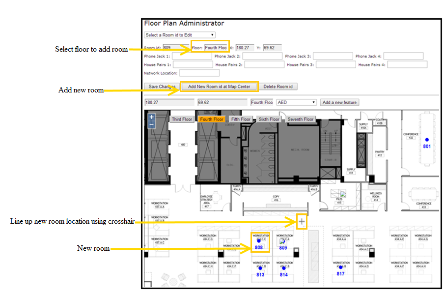
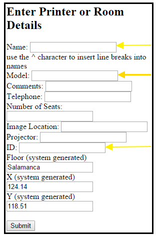
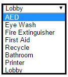

FloorPlanner Administrator Page
(http//yourserver/suite/FloorPlanner/floor-plan-editor.php)
Once the custom floor plan is installed, rooms and features can be added to the floor plan.
NOTE: The floor plan view can be adjusted using the (+/-) feature.
Add Rooms to the Floor Plan
Identify New Room Location
- Select the floor, at which the room will be added, from the dropdown field.
- Position the crosshair in the center of the desired space to identify the new room location. Click and drag the map to position the crosshair.

- Select the Add New Room id at Map Center. The ‘Enter Printer or Room Details’ popup window appears.
NOTE: If the ‘Enter Printer or Room Details’ popup window does not open, make sure your browser allows popups.
Enter Printer or Room Details
- Name the room, select the room Model, and enter the room Identification number. These fields are required. The room model appears in a dropdown list as either a conference room or hot desk. The room name and number will appear in the FloorPlanner.
NOTES: The identification number entered should mirror room identification numbers in MeetingPlanner. The room identification number links the FloorPlanner and MeetingPlanner reservation data.
To determine room identification numbers, please go to: Administration>Reports and run a room report. Floor, X, and Y fields populate automatically.
- Enter additional field information, (optional).
- Verify the room information entered and Submit. The new room number will appear in FloorPlanner.

Add Features to the Floor Plan
- Select the floor at which to add a feature.
- Use the Select a Room id to Edit dropdown box to highlight and select desired room to add a feature. Room id, floor, x, and y fields will automatically populate. Cross hair will automatically position to the room selected.
NOTE: You can also position the crosshair in the center of the desired space at which to add the new feature. Click and drag the map to position the crosshair.
- Use the AED dropdown box to highlight and select the desired feature.
- Select Add a new feature. An icon (e.g., Image to represent eyewash, bathroom, etc.), will be viewed from the flooplan to indicate the added feature.

- Select Save Changes.